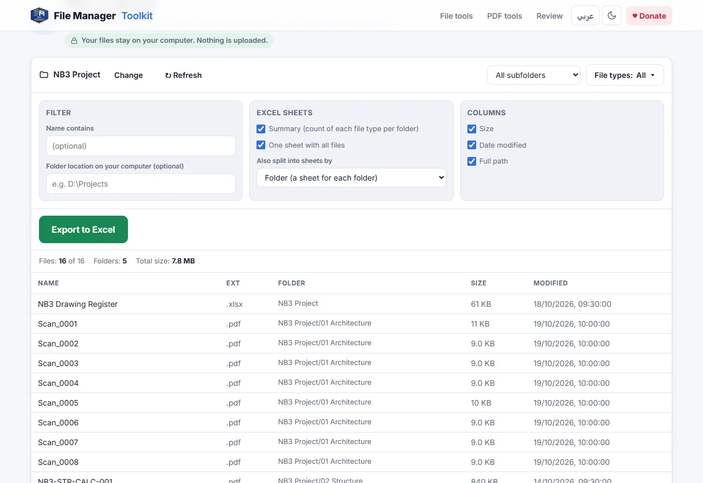

Free document transmittal template for Excel
A clean transmittal form in Excel: header, purpose of issue, numbered document list and sign-off lines. Download it free, and fill the document list from your folder instead of typing it.
Short answer
Download the template, fill the header, and list the documents you are sending. To skip the typing, open Files to Excel, choose the folder you are issuing and copy the file names into the Document No. column. For PDF drawings, PDF to Excel reads the number, title and revision from each title block.
What is in the template
- Transmittal number, date, project, project number, from, to, attention and how it was sent (email, CDE or hard copy).
- Purpose of issue: information, comment, approval, tender, construction or as built.
- A document list with automatic numbering: document number, title, revision, status, format, copies and remarks.
- A count of the documents listed, and signature lines for the sender and the receiver.
- Fits on an A4 page in portrait, ready to print or save as PDF.
What a transmittal is for
A transmittal is the cover sheet of an issue. It records exactly which documents, at which revision, went to whom, on which date and why. When a dispute comes up months later about which revision the contractor had, the transmittal is the proof. That is why the list must match the files that were actually sent, file by file.
Step by step
Download the template
Click Download the template and open it in Excel, LibreOffice or Google Sheets. Fill in the header: transmittal number, date, project and recipient.
Put the issue in one folder
Copy the exact files you are sending into one folder, so the transmittal and the files can never disagree.
List the folder in Excel
Open Files to Excel and choose that folder. It lists every file with its name, type and size. Download the Excel file and paste the names into Document No.
Add titles and revisions
For PDF drawings, PDF to Excel reads the title and revision from each title block, so you can paste those columns too instead of typing them.
Tick the purpose and send
Tick the purpose of issue, check the document count matches the number of files, then save the transmittal as PDF and send it with the files.

Tips
- Number transmittals in one sequence per project (TR-001, TR-002) and never reuse a number.
- Run the Pre-flight Check on the folder before you send: it catches duplicated numbers, missing sheets and revisions that do not match the register.
- If you work to ISO 19650, check the file names against the naming rule with the MIDP Check before they leave the office.
- Keep a copy of every transmittal with the files exactly as sent, in a folder named after the transmittal number.
Fill the list from your folder
Free, runs in your browser, and your files never leave your computer.
Open Files to Excel →Questions
Is the transmittal template free?
Yes. Download it and use it on any project with no sign up. It is a normal .xlsx file with no macros.
Can I use it in Google Sheets?
Yes. Upload it to Google Drive and open it with Google Sheets. The automatic numbering and the document count keep working.
How do I get a list of file names into Excel quickly?
Open Files to Excel and choose the folder. It lists every file, including subfolders if you want, and downloads it as an Excel file. No command prompt, VBA or Power Query needed.
What should a document transmittal include?
The transmittal number and date, sender and recipient, the purpose of issue, and for each document its number, title, revision and status, plus a signature or acknowledgement of receipt.
Are my files uploaded when I list them?
No. The folder is read by your browser on your own computer and nothing is sent to a server.